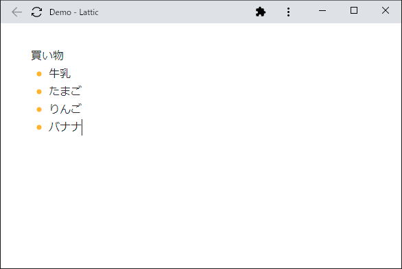
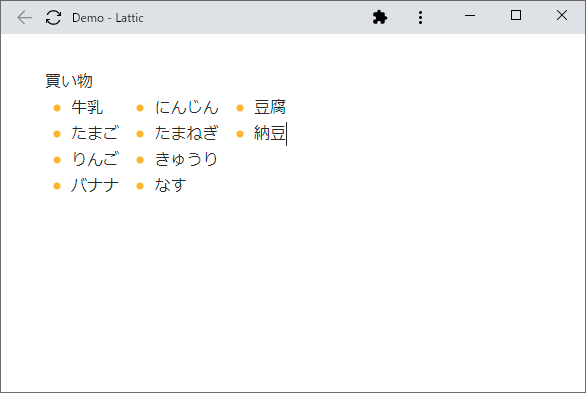
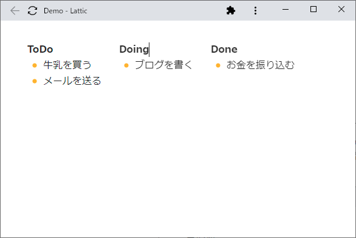
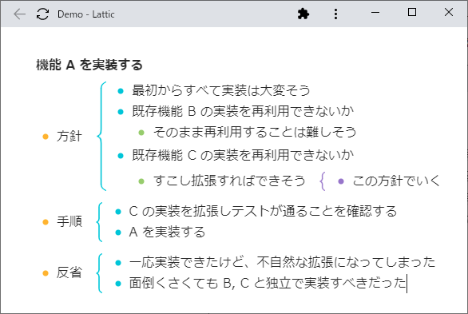
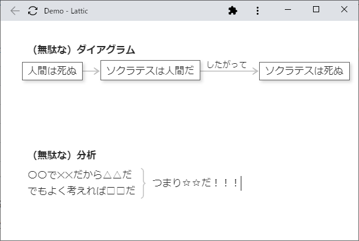

最近作ってるやつ
最近、こんな感じの Web アプリを作ってる。

これだけ見ると何の変哲もないメモアプリ/アウトライナーなんだけど、他のメモアプリ/アウトライナーではできない（あるいはすごく手間がかかる）こととして、たとえばこんなことができる。

スクリーンショットでは伝わりづらいかもしれない。要するに、縦方向だけでなく横方向にも「行」が書けるようになっている。操作感としては、通常のテキストエディタとほとんど変わりなく、上の例で言えば、「バナナ」のあとの改行が、通常の縦方向の改行ではなく横方向の「改行」になっているだけである。1
同じ機能を使って簡易的なカンバンも書ける。

他にはこんなこともできる。（ちょっと実用性を意識してみた）

アウトライナーをある程度使ったことがある人ならわかると思うけど、これぐらいの粒度でアウトラインを書いていくと表示領域をうまく使えず間延びした感じになってしまう。このアプリなら横方向へ書いていくことができるから、画面のなかにたくさん情報を詰め込むことができる。
実験中の機能としてはこんなものもある。

これを見たらもはや明白だと思う。このアプリで書けるものはテキストに限定していない。むしろ、もっと積極的にダイアグラム（的なもの）を書けるようにしたいと考えている。
市場を見てみると、（リッチ）テキストを書くためのアプリや、図やダイアグラムを描くためのアプリは山のようにあるのがわかる。しかしその中間、つまりテキストエディタ的な操作感で、通常のテキストやアウトラインだけでなく、水平アウトラインや表、カンバン、マインドマップ、 UML のような、二次元的な構造を持つテキスト・ダイアグラムを気軽に書いていけるアプリというのは、実はほとんど存在しないことに気付くと思う。
その理由は単純で、そういったものを作るのがすごく難しいから。俺（達）は詳しいんだ。
ちなみにこのアプリは個人で開発しているものではなく、共同創業者で代表取締役の pokarim と一緒に会社を作って営利目的で開発している。
最初に「そろそろリリースしたいね」という話題がでてからすごく時間が経ってしまったけど、今回こそ本当にリリースできそうです。まあ、リリースするといっても、さしあたってすごくキャッチーな機能があるわけでもないので、地道に実用的な機能を追加したりユーザーを開拓していく感じになると思う。
最後に蛇足。最近は Dropbox Paper や Notion のようなブロックベースの構造化エディタ（と呼んでいいのかわからない）が注目されているが、ブロックの実装内容に重きのある「ブロックベースの構造化エディタ」より、単純で可搬性のある二次元に拡張された「テキスト」のほうが長期的には人類の役に立つと思う。
問題は、短期的に生きていれば長期的にも生きている可能性があるが、短期的に死ねば必然的に長期的にも死ぬという点だ。リリースが遅れた理由の一つに、短期的に死ぬことの恐れがあったと思う。しかしこの期に及んで死ぬことを恐れても仕方がない。ベースの仕様も落ち着いたし、あとは淡々と実用的な機能を作り込んでいこうという心持ちにようやくなったのだろうと思う。とはいっても、メンタルも精神もわりとダメです。2
近いうちにリリースします。